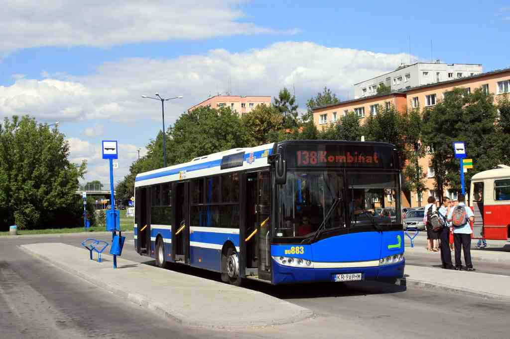
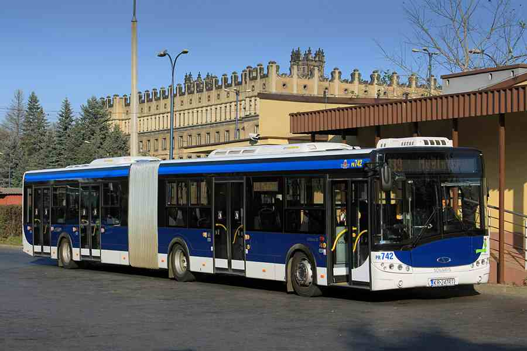

Lata eksploatacji w Krakowie: 2004-(nadal)
Dlugosc: 12m
Ilosc miejsc ogolem: 104
Ilosc miejsc siedzacych: 29+1
Obecna ilosc pojazdow w ruchu liniowym: 50
Poczatkowe numery taborowe: BU801-BU850
Ilosc pojazdow na koniec roku: 2004-2014:50
SOLARIS URBINO 12(III generacja)

SOLARIS URBINO 12III #BU883
Lata eksploatacji w Krakowie: 2008-(nadal)
Dlugosc: 12m
Ilosc miejsc ogolem: 104
Ilosc miejsc siedzacych: 29+1
Obecna ilosc pojazdow w ruchu liniowym: 112
Poczatkowe numery taborowe: BU8501-BU891, DU892-DU903, PU904-PU962
Przenumerowanie 1.(rok 2011): DU892-DU895 → BU892-BU895, DU896-DU903 → PU896-PU903
Przenumerowanie 2.(rok 2012): PU896-PU903 → BU896-BU903
Ilosc pojazdow na koniec roku: 2008:35, 2009-2011:53, 2012:73, 2013:98, 2014:112
SOLARIS URBINO 18(III generacja)

SOLARIS URBINO 18III #PR742
Lata eksploatacji w Krakowie: 2005-(nadal)
Dlugosc: 18m
Ilosc miejsc ogolem: 174
Ilosc miejsc siedzacych: 44+1
Obecna ilosc pojazdow w ruchu liniowym: 58
Poczatkowe numery taborowe: BR711-BR736, PR737-PR764, DR765-DR768
Przenumerowanie 1.(rok 2012): PR737-PR741 → BR737-BR741
Ilosc pojazdow na koniec roku: 2005-2006:6, 2007-2008:26, 2009-2010:31, 2011:44, 2012:54, 2013-2014:58